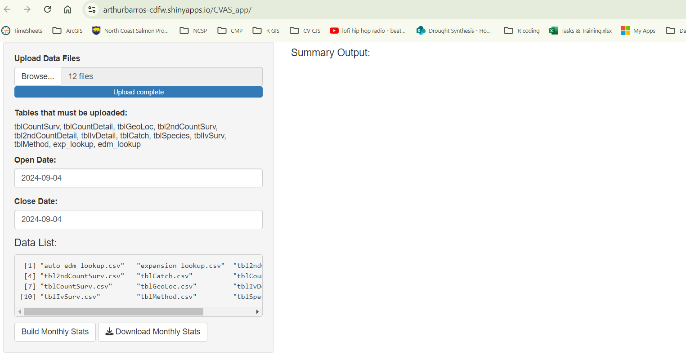

first_counts<-tblCountSurv %>%
left_join(tblCountDetail, by = "CountSurvId")%>%
left_join(tblGeoLoc,by='GeoLocId')%>%
mutate(SurveyDate = as.Date(SurveyDate, format = "%m/%d/%Y"))%>%
mutate(Start=as.POSIXct(Start,format="%m/%d/%Y %H:%M:%S"))%>%
mutate(Start=format(Start,format='%H:%M'))%>%
mutate(Finish=as.POSIXct(Finish,format="%m/%d/%Y %H:%M:%S"))%>%
mutate(Finish=format(Finish,format='%H:%M'))%>%
# Filter the survey dates
filter(as.Date(SurveyDate) >= as.Date(open_date) & as.Date(SurveyDate) <= as.Date(close_date)) %>%
# Group by required columns and calculate sum of Anglers
group_by(GeoLocDE, SurveyDate, Start, Finish, Day_Type = ifelse(weekdays(SurveyDate) %in% c("Saturday", "Sunday"), "WE", "WD"), LocSort) %>%
summarise(B_Anglers = sum(coalesce(B_Anglers, 0)), S_Anglers = sum(coalesce(S_Anglers, 0))) %>%
# Order the result
arrange(LocSort)CVAS Data Methods
Objectives
filler
Using the CVAS_app
To use the CVAS Shiny application navigate to: https://arthurbarros-cdfw.shinyapps.io/CVAS_app/.
Once at the application page, under the ‘Upload Data Files’ header click the “Browse…” button and upload the necessary data files. For the monthly stats data to be properly produced, you’ll need to upload the following 12 tables as .csv files:
tblcountSurv: contains relevant survey information, including SurveyDate, GeoLocID, Start, and Finish for survey first pass.
tblGeoLoc: a look-up table linking GeoLocID numbers to relevant river sections.
tblcountDetail: contains survey counts of boat and shore anglers for each surveys first pass.
tbl2ndcountSurv: contains relevant survey information for second survey counts.
tbl2ndcountDetail: contains survey counts of boat and shore anglers for each surveys second pass.
tblIvSurv: contains relevant roving interview survey information.
tblIvDetail: contains each recorded interview information for roving interview surveys.
tblSpecies: species look-up table linking SpeciesID numbers to relevant taxa information.
tblCatch: tracks information of species caught and kept recorded during roving interview surveys.
tblMethod: methods look-up table linking MethodID to MethodName.
expansion_lookup: table linking the expansion factors used to estimate angler effort for each EDM grouping, month, and hour.
edm_lookup: table linking each month and section combination to an EDM grouping code.
It will take a few moments after load the data, but once finished you’ll be provided with a “Data List” output listing all the tables you’ve uploaded to the app. It is important to note that the tables must maintain the same naming conventions listed above, and the same format as they are exported from the CVAS Access database.

Behind the RShiny app
filler
app_data_prep.R
Prepare first pass survey counts
The first step of the app_data_prep.R script is to create a data frame of angler counts collected from the first pass of each survey. The end output of this section is a data frame named “first_count” that includes the “Section” surveyed, the “SurveyDate”, the “Start” time, the “Finish” time, the “Day_Type” (weekend or weekday), the survey “Method” (boat or shore), and the total number of “Anglers” surveyed.
The first chunk of code does a lot of formatting and data merging for us:
Joins the tblcountSurv table to the tblcountDetail table by the countSurvId field.
Joins the above to the tblGeoLoc table to include river section information.
Formats all the SurveyDate and Start/Finish times into POSIXct format so they can be used as dates and times within R.
Filter the data to only include information from the target open and close date range.
Group the data by each location and SurveyDate combination, and calculating the sum of boat anglers and shore anglers.
Assign a day type to each survey, either weekday (WD) or weekend (WE).
Next we can use the dplyr select() call to select and rename just the fields we want to utilize in our resulting first_count table. After that we can use the tidyverse pivot_longer() call to transform the table so that we end up with a separate record for each method type, either “B” or “S” for boaters and shore anglers respectively, and the total count for both types.
first_counts<-dplyr::select(first_counts,section=GeoLocDE,SurveyDate,Start,Finish,Day_Type,B_Anglers,S_Anglers)
first_counts<-first_counts%>%
pivot_longer(
cols=B_Anglers:S_Anglers,
names_to = "Method",
values_to = "Anglers"
)
first_counts$Method<-ifelse(first_counts$Method=='B_Anglers','B','S')There are some caveats with how we report our angler survey data, in that some river sections report effort and harvest estimates separately for boat and shore anglers. These are sections 7.1, 12.1, and 12.0D. Section 7.1 already get’s tracked as “7.1S” and “7.1B” so we will change the other sections to match that format. Here we change sections 12.0D and 12.1 to reflect their specific method type, so that records for boaters on 12.0D will be tracked as “12.0DB”, and those for shore anglers as “12.0DS”.
#boating and shore surveys that are tracked separately in expansion lookups for 12.1 and 12.0D
targets<-c('12.0D','12.1')
first_counts$section<-ifelse(first_counts$section%in%targets,paste(first_counts$section,first_counts$Method,sep=''),first_counts$section)Finally we can group all the information by each SurveyDate and section and sum the angler counts. We then add a column that tracks the month of each survey, and finally save the output as “first_counts.rds” in the outputs folder. Note that an ‘.rds’ file is a common format for saving an R object, and allows us to ensure the formatting doesn’t change.
#next group and sum by section x month
first_counts<-first_counts%>%
group_by(section,SurveyDate,Start,Finish,Day_Type)%>%
summarise(Anglers=sum(Anglers))
first_counts$month<-month(first_counts$SurveyDate,label=T,abbr=F)
saveRDS(first_counts,'outputs/first_counts.rds')Prepare second pass survey counts
Next we can do everything we did above but now for the second survey pass. We’ll run that all as one chunk below, since the steps are the same as what we did for the first count.
second_counts<-tblGeoLoc %>%
right_join(tbl2ndCountSurv %>%
left_join(tbl2ndCountDetail, by = "CountSurvId"),
by = "GeoLocId") %>%
mutate(SurveyDate = as.Date(SurveyDate, format = "%m/%d/%Y"))%>%
mutate(Start=as.POSIXct(Start,format="%m/%d/%Y %H:%M:%S"))%>%
mutate(Start=format(Start,format='%H:%M'))%>%
mutate(Finish=as.POSIXct(Finish,format="%m/%d/%Y %H:%M:%S"))%>%
mutate(Finish=format(Finish,format='%H:%M'))%>%
# Filter the survey dates
filter(as.Date(SurveyDate) >= as.Date(open_date) & as.Date(SurveyDate) <= as.Date(close_date)) %>%
# Group by required columns and calculate sum of Anglers
group_by(GeoLocDE, SurveyDate, Start, Finish, Day_Type = ifelse(weekdays(SurveyDate) %in% c("Saturday", "Sunday"), "WE", "WD"), LocSort) %>%
summarise(B_Anglers = sum(coalesce(B_Anglers, 0)), S_Anglers = sum(coalesce(S_Anglers, 0))) %>%
# Order the result
arrange(LocSort)
second_counts<-dplyr::select(second_counts,section=GeoLocDE,SurveyDate,Start,Finish,Day_Type,B_Anglers,S_Anglers)
second_counts<-second_counts%>%
pivot_longer(
cols=B_Anglers:S_Anglers,
names_to = "Method",
values_to = "Anglers"
)
second_counts$Method<-ifelse(second_counts$Method=='B_Anglers','B','S')
#boating and shore surveys that are tracked separately in expansion lookups for 12.1 and 12.0D
targets<-c('12.0D','12.1')
second_counts$section<-ifelse(second_counts$section%in%targets,paste(second_counts$section,second_counts$Method,sep=''),second_counts$section)
second_counts<-second_counts%>%
group_by(section,SurveyDate,Start,Finish,Day_Type)%>%
summarise(Anglers=sum(Anglers))
second_counts$month<-month(second_counts$SurveyDate,label=T,abbr=F)
saveRDS(second_counts,'outputs/second_counts.rds')Prepare roving data
The roving interview data also needs to be cleaned and formatted similar to how the first and second count tables were prepared. The next chunk of code does the following:
Joins the tblIvDetail table to the tblCatch table.
Joins the above to the tblGeoLoc table to include river section information, and to the tblSecies look-up table.
Formats all the SurveyDate and Start/Finish times into POSIXct format so they can be used as dates and times within R.
Filter the data to only include information from the target open and close date range.
Assign a day type to each survey, either weekday (WD) or weekend (WE).
roving<-select(tblIvDetail,IvDetId,IvSurvId,IvPage,IvLine,NumberAnglers,FST,HrsFished,MethodId,tgtSpecies=SpeciesId)%>%
left_join(select(tblCatch,CatchId,IvDetId,Kept,Released,SpeciesId))%>%
left_join(select(tblSpecies,SpeciesId,SpeciesDE),by="SpeciesId")%>%
left_join(select(tblIvSurv,IvSurvId,GeoLocId,SurveyDate),by="IvSurvId")%>%
left_join(select(tblGeoLoc,GeoLocId,GeoLocDE))%>%
left_join(select(tblMethod,MethodId,MethodName))%>%
mutate(SurveyDate = as.Date(SurveyDate, format = "%m/%d/%Y"))%>%
mutate(FST=as.POSIXct(FST,format="%m/%d/%Y %H:%M:%S"))%>%
mutate(FST=format(FST,format='%H:%M'))%>%
filter(as.Date(SurveyDate) >= as.Date(open_date) & as.Date(SurveyDate) <= as.Date(close_date))Next we can assign week day types to our data, and calculate the total hours fished by anglers:
roving$Day_Type<-ifelse(weekdays(roving$SurveyDate)%in% c("Saturday", "Sunday"), "WE", "WD")
roving$TotalHours<-roving$NumberAnglers*roving$HrsFishedNext we can select the fields we want to use from our roving table, and then we want to change all the roving data from section “BF” to represent section “7.1B”.
roving<-dplyr::select(roving,section=GeoLocDE,SurveyDate,Day_Type,Page=IvPage,IvLine,Anglers=NumberAnglers,FST,HoursFished=HrsFished,tgtSpecies,SpeciesCaught=SpeciesDE,Kept,Released,TotalHours,MethodName)
roving$section<-ifelse(roving$section=='BF','7.1B',roving$section)Finally, we can pull out all of the by-catch count data that we don’t want in our roving data, and then save our final roving table. The by-catch data will be used later in this script.
#Pull out by-catch to remove from roving and use later
bycatch_targets<-c(1,11)
by_catch<-roving%>%
filter(!tgtSpecies%in%bycatch_targets & SpeciesCaught=='CS')
by_catch_filter<-unique(select(by_catch,section,SurveyDate,Day_Type,Page,IvLine,SpeciesCaught))
roving<-roving%>%anti_join(by_catch_filter)
saveRDS(roving,'outputs/roving.rds')Prepare ratio data
Next we want to prepare the ratio data, or the ratio of angler effort spent on Chinook. We do this by first pulling out the relevant fields from the roving table we just made,
ratio_prep<-unique(select(roving,section,SurveyDate,Day_Type,IvLine,Page,TotalHours,MethodName,MethodName,tgtSpecies))Next we need to format the sections for 12.0D and 12.1 so that they are divided into “B” and “S” representing boating and shore anglers, so they can be reported separately. We also want to group the “Boat” and “Guided boat party” methods into ‘B’ method. There is also some legacy data that labeled section “7.1B” as “BF”, so we’ll fix that here as well.
target_sections<-c('12.0D','12.1')
target_method<-c('Boat','Guided boat party')
ratio_prep<-ratio_prep%>%
mutate(MethodName=ifelse(MethodName%in%target_method,'B','S'))
ratio_prep$section<-ifelse(ratio_prep$section %in%target_sections,paste(ratio_prep$section,ratio_prep$MethodName,sep=''),ratio_prep$section)
ratio_prep$section<-ifelse(ratio_prep$section=='BF','7.1B',ratio_prep$section)For the ratio data we next calculate the total effort of all anglers for each Survey, the total hours of that effort targeting Chinook, and then the ratio of effort targeting Chinook.
The below gives us two important estimators for our summaries:
\[ E= \text{total angling hours for all species} \]
\[ E_{chinook} = \text{total angling hours for Chinook salmon} \]
\[ P_{Chinook} = \text{proportion of angler-hours targeting Chinook Salmon} \]
Finally the script saves the ratio table for later use.
Total_effort<-ratio_prep%>%
group_by(section,SurveyDate,Day_Type)%>%
summarise(Total_Effort=sum(TotalHours))
CS_effort<-ratio_prep%>%
filter(tgtSpecies%in%c(15,11))%>%
group_by(section,SurveyDate,Day_Type)%>%
summarise(CS_Effort=sum(TotalHours))
ratio<-Total_effort%>%
left_join(CS_effort)
ratio$ratio_cs<-ifelse(is.na(ratio$CS_Effort)==T,0,ratio$CS_Effort/ratio$Total_Effort)
saveRDS(ratio,'outputs/ratio.rds')Prepare by-catch data
The final data set we have to prepare before calculations is the by-catch, which we pulled out of the roving data earlier. This will be used later when we calculate effort and harvest estimates. First we select only the records that don’t have Chinook Salmon, listed as species code 11.
by_catch<-select(by_catch,section,SurveyDate,Day_Type,Page,IvLine,SpeciesCaught,Kept,Released,TotalHours,MethodName)
by_catch_surveys<-unique(select(by_catch,section,SurveyDate))
by_catch_effort<-roving%>%
inner_join(by_catch_surveys)%>%
filter(tgtSpecies!=11)Next we plug in some empty ‘Kept’ and ‘Released’ zeros so that we can join the by-catch data to the by-catch effort, and save the output as another rds file.
by_catch_effort<-unique(select(by_catch_effort,SurveyDate,section,Day_Type,Page,IvLine,TotalHours,MethodName))
# Check if by_catch_effort is not empty before creating the SpeciesCaught column
if (nrow(by_catch_effort) > 0) {
by_catch_effort$SpeciesCaught <- ' '
by_catch_effort$Kept=0
by_catch_effort$Released=0
} else {
# If by_catch_effort is empty, create the SpeciesCaught column without assigning values
by_catch_effort$SpeciesCaught <- character(0)
by_catch_effort$Kept=numeric(0)
by_catch_effort$Released=numeric(0)
}
by_catch<-by_catch%>%rbind(by_catch_effort)
saveRDS(by_catch,'outputs/by_catch.rds')Now that all of our data is prepared. The next step involves utilizing the first and second count tables we created and expanding their efforts using the EDM effort expansion factors.
app_expansions.R
CVAS surveyors can’t be everywhere to interview all the anglers, so we rely instead on a series of expansion factors to take the survey results and extrapolate an estimate of effort for each river section and month. Each count is combined with data from an effort distribution model (EDM) to estimate the total number of angler hours on that section for that day. The EDM represents an estimate of a day’s total angler hours represented in a given period of time.
To make these expansions with our data, we first create a function called effort_average(). This function takes a given row from our first_counts or second_counts data frames and joins it to our EDM look-up table exp_lookup, and calculates the mean expansion factor for that surveys hour range.
#create a function to calculate the average effort for the target surveys month, site-group, and hours using the exp_lookup table
effort_average<-function(row){
joined_data<-exp_lookup%>%
filter(month==row$month & site_grouping==row$EDM_code & hours %in% c(row$start_hour:row$finish_hour))
exp_factor<-if(row$Day_Type=="WD"){
mean(joined_data$WD)/100
}else if(row$Day_Type=="WE"){
mean(joined_data$WE)/100
}else if(row$Day_Type=='both'){
mean(joined_data$both)/100
}
}1st count expansions
To prep for the expansion process, we will first join our first_counts data to the edm_lookup table, then create two new columns called ‘start_hour’ and ‘finish_hour’, which are just the numeric value of the hour from the ‘Start’ and ‘Finish’ survey times. We also add in a ‘month’ column pulled from the SurveyDate.
first_counts<-first_counts%>%left_join(edm_lookup)
first_counts$start_hour<-as.numeric(format(as.POSIXct(first_counts$Start,format="%H:%M"),format='%H'))
first_counts$finish_hour<-as.numeric(format(as.POSIXct(first_counts$Finish,format="%H:%M"),format='%H'))
first_counts$month<-format(as.Date(first_counts$SurveyDate, format="%Y-%m-%d"),"%B")Then we can create a new data frame first_counts_grouped that groups all the first_counts records by month, SurveyDate, start_hour, finish_hour, section, Day_Type, and EDM_code. We then calculate the total number of Anglers for those groupings as ‘Total_Anglers’.
#group_by edm site grouping, month and date and sum anglers
first_counts_grouped<-first_counts%>%
group_by(month,SurveyDate,start_hour,finish_hour,Day_Type,EDM_code,section)%>%
dplyr::summarise(Total_Anglers=sum(Anglers))Now we can actually use the sapply() function from the tidyverse to apply the effort_average() function we just made to each row of the first_counts_grouped data frame, to give us the expansion factor for that row. With longer processes like this it’s always good to measure how long it takes using the Sys.time() call. For the 2022 first_counts_grouped data this took just over four minutes to run. Note that in the markdown document, this chunk has been set to eval=F to save time in document preparation.
start<-Sys.time()
first_counts_grouped$expansion_factor<-sapply(1:nrow(first_counts_grouped),function(i){
effort_average(first_counts_grouped[i,])
})
finish<-Sys.time()
finish-startNow we can use the total number of anglers and divide it by the expansion factors we just linked to each survey to produce an estimate of total angler effort for that section and day.
#Calculate total angler effort
first_expansions<-first_counts_grouped%>%
mutate(angler_effort=Total_Anglers/expansion_factor)
first_expansions$count<-'First'The above replicates the following equation for estimating the total angling hours for all species:
\[ \hat{E}=\frac{n}{P} \]
Where \(n\) is the roving angler count (Total_Anglers) and \(P\) is the expansion_factor based on the EDM look-up table.
2nd count expansions
Next we can replicate the expansion calculations we just did above for the first_count data, but now for the second_count data. The methods are the same, so I’ll just throw it all into the following code chunk:
second_counts<-second_counts%>%left_join(edm_lookup)
second_counts$start_hour<-as.numeric(format(as.POSIXct(second_counts$Start,format="%H:%M"),format='%H'))
second_counts$finish_hour<-as.numeric(format(as.POSIXct(second_counts$Finish,format="%H:%M"),format='%H'))
second_counts$month<-format(as.Date(second_counts$SurveyDate, format="%Y-%m-%d"),"%B")
#group_by edm site grouping, month and date and sum anglers
second_counts_grouped<-second_counts%>%
group_by(month,SurveyDate,start_hour,finish_hour,Day_Type,EDM_code,section)%>%
dplyr::summarise(Total_Anglers=sum(Anglers))
start<-Sys.time()
second_counts_grouped$expansion_factor<-sapply(1:nrow(second_counts_grouped),function(i){
effort_average(second_counts_grouped[i,])
})
finish<-Sys.time()
finish-start
#Calculate total angler effort
second_expansions<-second_counts_grouped%>%
mutate(angler_effort=Total_Anglers/expansion_factor)
second_expansions$count<-'Second'Now that our expansions are done for the second count, we can bind the expansions together into one data set and see what our final output looks like.
count_expansions<-first_expansions%>%
rbind(second_expansions)Finally we’ll save out output as ‘count_expansions.rds’ for use in the next step, summarizing effort and harvest data.
saveRDS(count_expansions,'outputs/count_expansions.rds')app_summary.R
This next session has several parts, but the end result is a data set summary_data, which contains effort, catch, harvest, and release estimates for each survey section, month, and survey count type (‘First’ or ‘Multiple’). This is done by running the ‘summary.R’ script, which is walked through below.